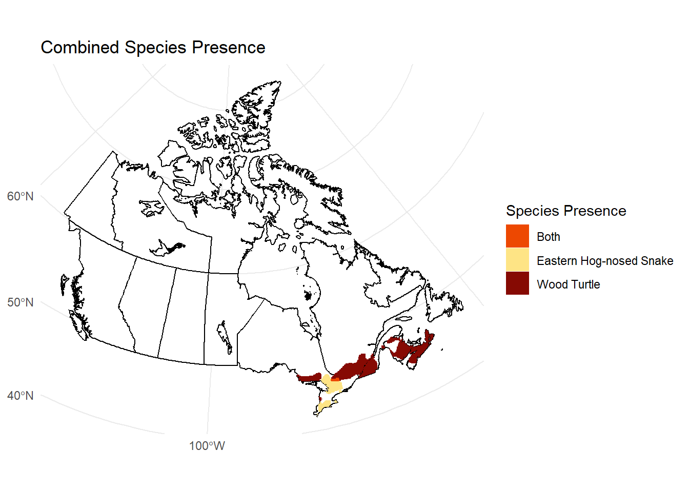

library(terra)
library(sf)
library(exactextractr)
library(dplyr)
library(rnaturalearth)
library(ggplot2)SAR Extraction Loop
Overview
This section outlines the processing of 441 species range maps to extract presence/absence data across a 10 km x 10 km grid.
For each raster:
- The species range is overlaid with the grid.
- Grid cells overlapping the species range are marked as present (1) or absent (0).
- In grids where a species is present, 1s are replaced with the species-specific score.
Due to runtime constraints (approximately 10 hours for full processing), a subset of 2 species is demonstrated below for illustrative purposes. Full data and code are available separately.
Inputs
data/Master_list_SAR.csvoutputs/grid/grid_10km_Albers.rdsoutputs/SAR_Scores.csv- Species raster files from
data/raster files outputs/output_grid_sf.rds: full loop output containing presence and score columns for all species (only a 2‑species subset is run in the example code, but this complete file is used for later analyses)
Load Libraries
Copy Species Raster Files (Optional)
All species raster files listed in the master CSV are filtered and copied to a new folder for processing.
Assign Folders
# Set file paths
csv_path <- "data/Master_list_SAR.csv"
source_folder <- "data/raster files/"
destination_folder <- "data/filtered raster files/"Copy Files
#
# Read master species list
raster_files <- read.csv(csv_path, stringsAsFactors = FALSE)
# Get unique raster file names
file_names <- unique(na.omit(raster_files$File_name))
# Copy matching raster files
for (file_name in file_names) {
source_file <- file.path(source_folder, file_name)
dest_file <- file.path(destination_folder, file_name)
if (!file.exists(dest_file) && file.exists(source_file)) {
file.copy(from = source_file, to = dest_file, overwrite = FALSE)
}
}Sample Loop
The following code demonstrates the presence/absence extraction process for a sample of 2 species (from a total of 441).
The loop performs the following steps:
- Identifies the corresponding species metadata.
- Processes the raster to identify grid cells with species presence.
- Overlays them on the spatial grid, creating two new columns for each species:
presence_<species_name>: binary indicator (1 = presence, 0 = absence).value_<species_name>: species score assigned to occupied cells.
Output is saved after each iteration to preserve progress in case of interruptions.
# Load spatial grid and species scores
grid_sf <- readRDS("outputs/grid/grid_10km_Albers.rds")
species_info <- read.csv("outputs/SAR_Scores.csv")
# List raster files to be processed
raster_files <- list.files("data/filtered raster files/", pattern = "*.tif", full.names = TRUE)
# Process a subset of 2 species (Eastern Hog-nosed Snake and Wood Turtle)
target_files <- c("COSEWICID_301_1KM.tif", "COSEWICID_286_1KM.tif")
subset_raster_files <- raster_files[basename(raster_files) %in% target_files]
# Output file path
output_file_path <- "outputs/output_grid_sf_sample.rds"
# Loop through species
for (i in seq_along(subset_raster_files)) {
tryCatch({
raster_file_name <- basename(subset_raster_files[i])
# Match raster file with species metadata
species_info_row <- species_info[species_info$File_name == raster_file_name, ]
if (nrow(species_info_row) == 0) {
stop(paste("No species info found for file", raster_file_name))
}
# Load and reproject grid to raster CRS
r <- rast(subset_raster_files[i])
grid_sf <- st_transform(grid_sf, crs = crs(r))
# Extract presence/absence using exactextractr
presence <- exact_extract(r, grid_sf, fun = function(values, coverage_fraction) {
as.integer(any(!is.na(values)))
})
# Clean species name for column naming
clean_species_name <- gsub("[^[:alnum:]_]", "_", species_info_row$Common_name)
# Attach presence and score columns to grid
grid_sf[[paste0("presence_", clean_species_name)]] <- presence
grid_sf[[paste0("value_", clean_species_name)]] <- ifelse(presence == 1, species_info_row$Score, 0)
# Save updated grid after each iteration (keep progress if loop fails)
saveRDS(grid_sf, file = output_file_path)
# Optional messages as loop progresses
print(paste("Done iteration", i, "out of", length(subset_raster_files), "at", Sys.time()))
}, error = function(e) {
print(paste("Error in iteration", i, ":", e$message))
})
}Sample Plot
The map below visualizes the presence of Wood Turtle and Eastern Hog-nosed Snake from the above loop.

Summing Scores per Grid Cell
After looping through all species, total scores per grid cell are calculated.
Load Necessary Files
The full dataset resulting from the processing of all species is loaded here, extending beyond the two-species example demonstrated previously.
# Load in output grid from above loop
summed_scores <- readRDS("outputs/output_grid_sf.rds")Prepare Data
# Drop geometry
grid_10_attributes <- st_drop_geometry(summed_scores)
# Select only value columns (columns with scores)
value_columns <- grep("value", colnames(grid_10_attributes), value = TRUE)
# Ensure those columns are numeric
grid_10_attributes[, value_columns] <- lapply(grid_10_attributes[, value_columns], function(x) {
as.numeric(as.character(x))
})Sum Data
# Calculate row sums
summed_scores$sum_values <- rowSums(grid_10_attributes[, value_columns], na.rm = TRUE)
# Replace 0s with NA so they plot as grey
summed_scores$sum_values[summed_scores$sum_values == 0] <- NAExample Summed Scores Table
# Load the grid with turtle scores
grid_sf <- readRDS("outputs/output_grid_sf_sample.rds")
# Drop geometry
grid_df <- st_drop_geometry(grid_sf)
# Ensure column names match
value_cols <- c("value_Eastern_Hog_nosed_Snake", "value_Wood_Turtle")
# Add a sum column just for these two species
grid_df$value_sum <- rowSums(grid_df[, value_cols], na.rm = TRUE)
cols_to_show <- c("grid_id", "value_Eastern_Hog_nosed_Snake", "value_Wood_Turtle", "value_sum")
# Find rows where both turtles have scores
overlap_rows <- grid_df[
grid_df$value_Eastern_Hog_nosed_Snake > 0 & grid_df$value_Wood_Turtle > 0,
][1:3, c(value_cols, "value_sum")]
# Find rows where only one turtle has a score
nonoverlap_rows <- grid_df[
xor(grid_df$value_Eastern_Hog_nosed_Snake > 0, grid_df$value_Wood_Turtle > 0),
][1:2, c(value_cols, "value_sum")]
# Combine overlapping and non-overlapping rows
example_rows <- rbind(overlap_rows, nonoverlap_rows)
# Turn row names into a column called "grid_id"
example_rows <- tibble::rownames_to_column(example_rows, var = "grid_id")
# Display the table with proper labels
knitr::kable(example_rows, caption = "Example Dataset of Summed Scores")| grid_id | value_Eastern_Hog_nosed_Snake | value_Wood_Turtle | value_sum |
|---|---|---|---|
| 88012 | 1591.09 | 917.9365 | 2509.0264 |
| 88013 | 1591.09 | 917.9365 | 2509.0264 |
| 88014 | 1591.09 | 917.9365 | 2509.0264 |
| 77204 | 0.00 | 917.9365 | 917.9365 |
| 77205 | 0.00 | 917.9365 | 917.9365 |
Save Data
saveRDS(summed_scores, "outputs/output_grid_sf_score.rds")saveRDS(summed_scores, "F:/SAR Project/outputs/output_grid_sf_score.rds")Outputs
The following files are produced from this process:
outputs/output_grid_sf.rds: Contains all 441 species processed, with individual presence_ and value_ columns for each species. This file serves as an intermediate output prior to the subsequent summarization of scores.outputs/output_grid_sf_score.rds: Same as above, with the addition of a sum_values column representing the total score across all species per grid cell.